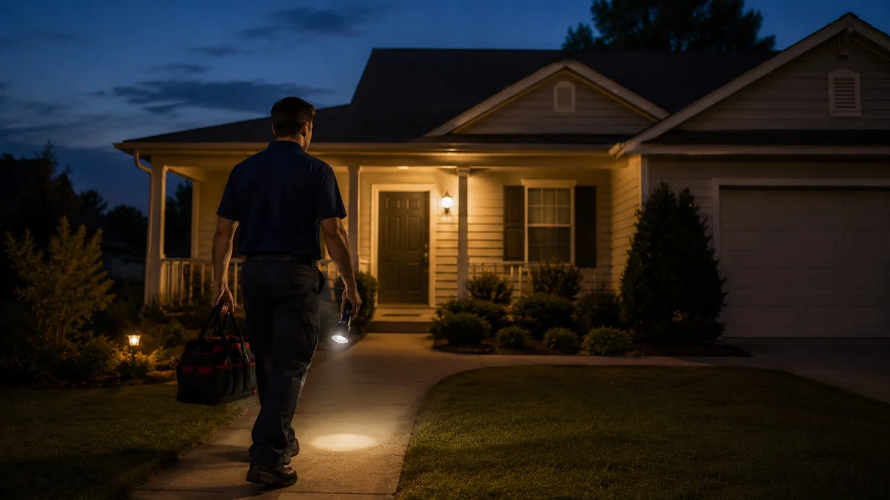

Advertising Disclosure: This site may receive compensation for service connections made through this page. Content is editorially independent.
Emergency HVAC service in 2026 typically costs the standard repair price plus a $100 to $300 after-hours surcharge, a $65 to $150 diagnostic fee (often waived if you book the repair), and a 1- to 2-hour minimum service charge that applies regardless of how long the actual repair takes. A capacitor swap that costs $200 at 2 p.m. on a Tuesday becomes $450 to $700 at 9 p.m. on the same Tuesday, and $600 to $1,000 on a Saturday night. The decision worth making isn't what does it cost — the standard ranges are knowable. The decision worth making is which failures actually require the after-hours premium, which can wait until morning, and what to ask the dispatcher before the truck rolls. Three failure types justify the premium: safety risk, habitability risk for vulnerable occupants, and active escalating damage. Everything else can wait, and waiting saves $100-$300.
It's 9 p.m. on a weeknight. The AC stopped working an hour ago. The thermostat reads 82 inside. You're on Google searching "emergency HVAC service" and trying to figure out whether to pay the after-hours rate or sweat it out until 8 a.m. tomorrow when the standard surcharge disappears. The honest answer depends on three things: who's in the house, what's actually broken, and whether the dispatcher quotes you a complete number upfront. This article is the cost breakdown, the urgency-triage decision, the six questions to ask before authorizing service, and the service-plan math most homeowners never run.
For the canonical pricing of the underlying repair itself (capacitor replacement, refrigerant recharge, compressor diagnosis, etc.), our 2026 HVAC Cost Guide is the source of truth — this article does not restate those numbers. For the broader question of whether to repair the failing component or replace the whole system, see the C5 repair-or-replace framework. For why an emergency tech in two different cities might quote 2x different surcharges for the same job, the 2026 HVAC Cost Guide pillar covers regional labor variance. This article's unique territory is the three cost layers that exist only on emergency calls, and the decision rules for whether to incur them.
The Three Cost Layers on Every Emergency Call
Standard HVAC pricing has two layers: a diagnostic or service-call fee, then labor and parts for the actual repair. Emergency pricing adds three layers on top:
- After-hours surcharge ($100–$300): The biggest line item. Pays for the technician's overtime rate, the dispatcher's after-hours overhead, and the fact that the truck is dedicated to your call instead of waiting in queue with daytime jobs. This is a flat add-on, not a percentage of the repair — the same $200 surcharge applies whether the repair is a $90 capacitor or a $2,800 compressor swap.
- Minimum service charge (1–2 hours of labor): Most emergency dispatch operations bill a minimum block of labor regardless of how long the actual fix takes. A 15-minute capacitor swap is billed at the 1- or 2-hour minimum. At after-hours labor rates of $150 to $250 per hour, the minimum alone runs $150 to $500.
- Weekend/holiday multiplier ($50–$150 added to surcharge): Friday evening through Sunday, plus federal holidays, plus the night-before and day-after of holidays. The standard $200 weeknight surcharge becomes $275 to $350 on Saturday night, and $300 to $400 on a holiday Sunday. The repair underneath doesn't change — the surcharge layer does.
The underlying repair price is the same as during business hours. A condenser fan motor replacement is $400 to $900 at 2 p.m. or 2 a.m. What's different is the surcharge + minimum + multiplier stack on top. Run the math:
| Scenario | Repair | Surcharges + min | All-in |
|---|---|---|---|
| Tuesday 2 p.m. — capacitor swap | $90–$450 | $65–$150 diag fee (often waived) | $90–$450 |
| Tuesday 9 p.m. — capacitor swap | $90–$450 | +$100–$300 surcharge + 1hr min | $340–$900 |
| Saturday 11 p.m. — capacitor swap | $90–$450 | +$150–$400 surcharge + 1–2hr min | $430–$1,100 |
| July 4 holiday — capacitor swap | $90–$450 | +$200–$450 surcharge + 2hr min | $540–$1,200 |
Estimated ranges based on the canonical CoolCallPro pricing reference. Actual costs vary by region, provider, and dispatcher policy. See costs.html for standard repair pricing and the Emergency & Service Call Fees table.
The pattern is clear: the same job costs 3 to 5x more depending on when you call. That's the real economic question driving the decision, not the repair price.
When Emergency Service Is Worth Paying For (The 3-Tier Triage)
Most homeowners reach for emergency service when the math doesn't justify it. Pay the after-hours premium when one of these three categories applies; otherwise the morning rate is fine.
Tier 1: Safety risk — call now, no matter the cost
Some failures are not "HVAC problems," they are emergencies that happen to involve the HVAC. Pay the premium without hesitation:
- Natural gas smell anywhere in the house. Evacuate first, call the gas utility from outside, and only after the gas is shut off do you call the HVAC tech to address the source. Do not flip switches or operate the gas valve. If the smell is faint and you suspect a slow leak at the furnace, that's still an evacuation-first situation.
- Carbon monoxide detector alarming with the furnace running. Per CDC guidance, symptoms of CO exposure — headache, dizziness, confusion, nausea — require immediate evacuation. A CO detector going off when the furnace is the only combustion appliance running is a true emergency. Pay the surcharge.
- Electrical burning smell or visible smoke from the indoor or outdoor unit. Kill the breaker, evacuate the immediate area, call the technician. The repair cost itself may not be high (often a failed contactor or motor winding) but the fire risk warrants immediate dispatch.
- Visible flooding from a frozen evaporator coil that's about to drop water on a finished ceiling. The damage from a soaked drywall ceiling exceeds any after-hours surcharge. Catch it tonight.
Tier 2: Habitability for vulnerable occupants — pay the premium
No heat or no cooling becomes a medical issue when the occupant can't compensate. Pay the after-hours rate when:
- It's below 40 F outside and the house has infants under 1 year old, occupants over 75, or anyone with a serious medical condition (heart, respiratory, chemotherapy patients, post-surgical recovery)
- Outdoor heat index above 100 F with the same demographic considerations — heat exhaustion sets in faster for very young, very old, and medically fragile
- Bedroom temperatures projected to drop below 50 F (or rise above 90 F) overnight per the local forecast and no alternative heating/cooling is available
- You're in a cold-climate market — Peoria, IL, Allentown, PA, similar — and the failure is on a January night below 20 F; frozen pipes become the secondary risk
Tier 3: Active escalating damage — pay the premium
A repair that gets dramatically more expensive if you wait. Worth the surcharge to stop the bleeding:
- Refrigerant leak large enough to trip the low-pressure cutoff — running the unit further can damage the compressor (a $900–$2,800 part)
- Heat exchanger that's actively cracking under thermal cycling — continued operation introduces CO risk
- Drain pan overflowing onto subflooring or finished surfaces — water damage compounds within hours
- Outdoor unit fan motor seized but compressor still running — you have minutes to hours before the compressor overheats and dies
Wait until morning when:
If none of the three tiers apply, the call almost always waits. Specifically:
- AC out on a 70-75 F evening — open windows, run fans, call at 8 a.m.
- Furnace blowing slightly cool air on a 50 F night with healthy adults — wear a sweater, call at 8 a.m.
- Thermostat blank but the system is otherwise quiet — check the C1 cluster article on a blank thermostat first; it's often a tripped breaker or a dead thermostat battery (a 15-second homeowner fix, no call required)
- Strange noise but the system is still cooling/heating — the surcharge is wasted; the same diagnostic happens in daylight at the standard rate
We connect homeowners with independent emergency HVAC technicians 24/7 in many areas.
Call Now — (844) 582-1795Disclosure: We are a referral service and may receive compensation for qualified calls. Calls may be routed to an independent provider network and may be recorded. Pricing and availability vary by provider and location.
Six Questions to Ask the Dispatcher Before the Truck Rolls
The single biggest predictor of getting gouged on an emergency HVAC call is taking the first quote without asking for the components separately. Before you authorize service, get these six numbers on the phone, in this order:
- What is your after-hours surcharge? A clear answer in dollars: "$200 added to the repair cost." Vague answers ("emergency rates apply") mean walk away — that's how surprise invoices happen.
- What is your minimum service charge? Specifically: "How many hours of labor do you bill minimum, and at what rate?" A 1- or 2-hour minimum at $150 to $250 per hour is standard. A 3+ hour minimum is unusual and worth questioning.
- Is the diagnostic fee separate or included? Some operators bundle diagnostic into the minimum; some bill it separately and waive it if you book. Pin it down before the truck rolls.
- Do weekend or holiday rates apply tonight? Especially relevant for late-Friday-night calls (some operators classify Friday after 6 p.m. as weekend) and the night-before-holiday calls.
- Will the technician give me a written estimate before starting the repair? The answer must be yes. An emergency dispatch that won't put the repair quote in writing before work begins is a billing trap.
- What's your service-plan rate, and would tonight be cheaper if I sign up? Many operators offer a $150 to $350 annual contract that waives the surcharge. If you're paying $300 in surcharge tonight, signing up for the plan can be the cheaper option for tonight's call AND buy a year of waived surcharges for the next emergency.
A legitimate operator answers all six in under three minutes on the phone. A predatory one stalls, says "the tech will figure it out when he gets there," or quotes "starting at" prices that don't bind to anything. Hang up on the second category and call somebody else — even at 11 p.m. in summer, you have options.
Fair Rates vs Gouging — Real-World Examples
What does a fair emergency HVAC bill actually look like in 2026? Two concrete examples:
Fair: $345 total for a Tuesday-night capacitor swap.
- Diagnostic fee: $0 (waived because repair was authorized)
- Capacitor part: $45
- Labor: $145 (1-hour minimum at $145/hr)
- After-hours surcharge: $155
This is a fair, fully-itemized bill. The repair price matches the standard daytime range, the surcharge is in the middle of the $100-$300 band, and the minimum is one hour at a reasonable rate. The dispatcher quoted all four numbers on the initial call.
Gouging: $980 total for the same Tuesday-night capacitor swap.
- "Emergency dispatch fee": $295 (not disclosed on call)
- "Diagnostic and inspection": $185 (advertised as $79 on website)
- Capacitor part: $145 ("commercial-grade" markup)
- Labor: $355 (2.5-hour minimum at $142/hr for a 20-minute job)
Three red flags: the "emergency dispatch fee" wasn't quoted upfront, the diagnostic fee is more than 2x the advertised number, and the 2.5-hour minimum is excessive for a 20-minute capacitor swap. This is the bill that ends in a chargeback dispute and a BBB complaint.
The difference between the two isn't the underlying repair — it's the surcharge stack and the upfront disclosure. Always get the surcharge stack quoted on the initial phone call.
The Service-Plan Math Most Homeowners Skip
If you're calling for emergency HVAC service even once every two years, the service-plan math probably favors signing up. Per the Cool Call Pro cost guide, annual HVAC maintenance contracts run $150 to $350 per year and typically include:
- Two scheduled tune-ups (one for AC, one for furnace)
- Waived diagnostic fee on service calls
- Waived or reduced after-hours surcharge (varies by plan; some fully waive, some cap at $75)
- Priority scheduling — you skip the queue when the operator is at capacity
- 10 to 15 percent discount on repair labor and parts
Run the math against your last two years of emergency calls. If you paid $300 in surcharges two summers ago and $250 last summer, that's $550 saved if a $250 plan covers them. The plan also covers the standard $150 tune-up that prevents some emergencies in the first place. It's the rare situation in HVAC where the package deal genuinely beats the a-la-carte cost — mostly because the surcharge layer is so expensive and so avoidable.
The plan does not cover catastrophic repairs (compressor replacement, evaporator coil, heat exchanger). For those, the standard repair-vs-replace math from our repair-or-replace framework applies regardless of plan status.
A technician can walk you through the diagnosis and itemize the bill before any work starts.
Call Now — (844) 582-1795Disclosure: We are a referral service and may receive compensation for qualified calls. Calls may be routed to an independent provider network and may be recorded. Pricing and availability vary by provider and location.
Climate Context — When Geography Tilts the Math
Emergency HVAC demand is climate-driven, and that affects both pricing and availability. Three concrete examples:
Fresno, California (hot-dry, summer highs above 100 F): Late-July and August emergency surcharges run at the high end of the $200-$300 band because every operator in the Central Valley is at capacity simultaneously. A capacitor swap at 9 p.m. in August often clocks in at $500-$700 all-in vs $300-$450 in shoulder season. If the failure is comfort-tier and the overnight low is below 80 F, waiting saves real money. If it's safety-tier with vulnerable occupants, the surcharge is unavoidable — book early in the night, not late.
Allentown, Pennsylvania (cold-climate, winter lows below 20 F): Mid-January furnace emergencies see surcharges at the high end and minimum-service charges often stretched to 2 hours because dispatch operators expect call volume to overrun staffing. A no-heat call at 11 p.m. in a 15 F night with infants in the house is firmly Tier 2 (habitability) — pay the surcharge. A no-heat call at 8 p.m. in a 45 F night with healthy adults is comfort-tier — wait until 8 a.m. and save $200-$400.
Peoria, Illinois and Fayetteville, North Carolina (mixed climates, both heating and cooling emergencies year-round): Surcharge pricing tracks the season — summer AC emergencies and winter furnace emergencies both run at standard $100-$300 surcharges, but the underlying repair labor cost in Peoria's denser metro market runs higher than rural Fayetteville. Cost variance across metros is real; the cost guide pillar covers the why.
Trusted Industry Sources
The guidance in this article is consistent with published recommendations from:
- EPA — Section 608 Technician Certification
- CDC — Carbon Monoxide Poisoning
- U.S. Department of Energy — Maintaining Your Air Conditioner
- ACCA — Air Conditioning Contractors of America (standards)
Frequently Asked Questions
Emergency HVAC service in 2026 typically costs the standard repair price plus a $100 to $300 after-hours surcharge. A diagnostic or service call fee of $65 to $150 usually applies on top, though many companies waive it if you book the repair through them. Holiday emergency premiums (Thanksgiving, Christmas, July 4th) add another $100 to $300. Total all-in for a typical emergency capacitor or contactor repair at 9 p.m. on a weekday runs $300 to $700; the same repair on a holiday weekend can run $500 to $1,100. The variance is mostly about WHEN you call, not what's broken. The repair cost itself is the same as a daytime job — what you're paying extra for is the technician's overtime and the dispatcher's after-hours overhead. See costs.html for the canonical breakdown.
Three categories of HVAC failure justify an emergency call: (1) safety risks — gas smell, a carbon monoxide detector alarming with the furnace running, electrical burning smell, or visible water damage actively occurring; (2) habitability risks — no heat with outdoor temperatures below 40 degrees F and vulnerable occupants (infants, elderly, medically fragile); no cooling with outdoor heat index above 100 F and similar occupants; (3) escalating damage — a frozen evaporator coil that's about to dump water on a finished ceiling, or a refrigerant leak large enough to trip the low-pressure cutoff. Outside those three categories, waiting until morning saves $100 to $300 in surcharges. AC out at 11 p.m. when it's 70 F outside, or a furnace blowing slightly cool air on a 50 F night, almost never justify emergency rates.
Fair after-hours surcharges in 2026 run $100 to $300 added on top of the standard repair bill. Anything above $400 in surcharge alone (not including the actual repair labor) is in price-gouging territory unless the technician documents extraordinary travel time, a holiday, or an emergency runner trip for unusual parts. The surcharge typically covers the technician's overtime rate (1.5x base), the dispatcher's after-hours overhead, and the fuel for one trip. A reasonable operator quotes the surcharge upfront as a flat add-on; an unreasonable one buries it in a vague "emergency dispatch fee" that doesn't show up until the invoice. Always ask the dispatcher for the surcharge figure before authorizing the truck roll. If they refuse to quote it, call another company.
Most emergency HVAC dispatch operations bill a minimum service charge — typically 1 to 2 hours of labor — regardless of how long the actual repair takes. The minimum exists because the after-hours economics don't work without it: the tech is paid an overtime rate for the entire shift, the dispatcher is paid to be on call, and the trip is dedicated to your house even if the repair takes 15 minutes. A 1-hour minimum at $150 to $250 per hour after-hours is industry-standard. A 2-hour minimum is at the high end but legal and common in dense metro markets. Anything above 2 hours, or a minimum that scales with the surcharge instead of the labor rate, is unusual and worth questioning. The dispatcher should disclose the minimum when you call, before the truck rolls; if they don't, ask explicitly: "What is your minimum service charge for after-hours work?"
Yes, typically 25 to 50 percent higher. Weeknight emergency rates (Monday through Thursday, 5 p.m. to 8 a.m.) usually carry the standard $100 to $300 after-hours surcharge. Friday night through Sunday rates often add another $50 to $150 because the technician's premium overtime rate increases, and competing demand for the same after-hours pool means dispatch fees rise too. Holiday weekends compound: a Saturday-of-July-4th-weekend AC emergency in a hot-humid climate can run 2x the weeknight equivalent because every operator in the market is at capacity. If the issue is genuinely safety-tier and you need help on a holiday weekend, pay the premium. If it's comfort-tier and can wait, Monday morning rates apply and the surcharge drops to zero.
Most annual HVAC maintenance contracts ($150 to $350 per year per costs.html) include some combination of: waived diagnostic fee, waived after-hours surcharge, priority scheduling, and a 10 to 15 percent discount on repair labor. The specific benefits vary by company — some waive surcharges entirely, others cap them at $75 instead of $150 to $300. If you call several emergency HVAC repairs per year, the math frequently favors a service plan: two emergency calls at $200 surcharge each are $400 in one year, more than the cost of most plans. Service plans rarely cover catastrophic repair costs (compressor replacement, coil replacement) — they cover the time-based and trip-based fees that pile up on emergency calls. Read the contract carefully before assuming a benefit applies; some plans exclude holidays from the surcharge waiver.
Local HVAC Service Areas
Cool Call Pro connects homeowners with independent HVAC technicians nationwide. Find a pro in Allentown (PA), Peoria (IL), Fayetteville (NC), or Fresno (CA), or browse by state: Pennsylvania, Illinois, or all locations.